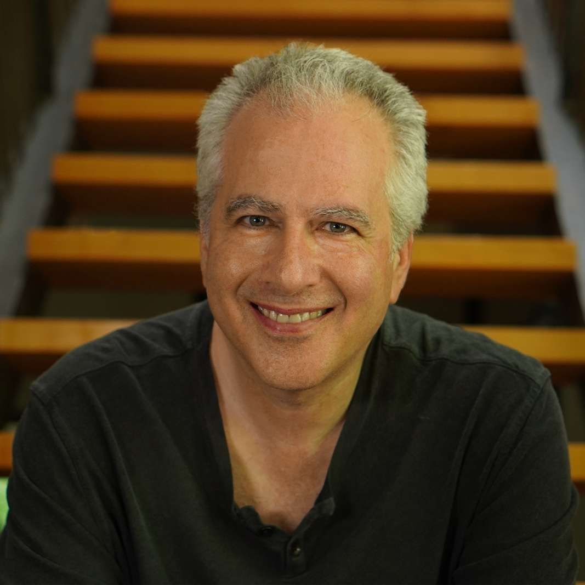

Policy
Transforming research into public policy, governance, and institutional design that helps societies navigate the age of intelligent agents.
Kinship Intelligence Institute
These technologies have burned people. We know.
AI psychosis, fed by narcissistic models that reward delusion. Data centers draining water, burning fracked gas, and straining grids. Feeds tuned to hold your attention as they extract and exploit.
When a wildfire bears down, firefighters light a fire of their own. The controlled burn clears the fuel in its path, and the inferno dies where the backfire has already passed. Same fire, set with care, to protect what we love. The Institute uses AI to make AI rare, and to put agency back in the hands of every person, community, and living system the last decade has flattened.
The tipping point
One technology. One moment. Two futures. The difference is not the model, the architecture, or the intelligence itself. It is the layer that decides who an agent ultimately serves, who it is accountable to, and whether its growing capabilities are used to expand human agency or quietly replace it.
The most complete machinery of surveillance, manipulation, and control ever assembled.
Agents that are persistent, adaptive, and intimately personal, optimizing every conversation, recommendation, and relationship for someone else's objectives. The logic of social media, extended from your screen into your life.
The first real opportunity in ten thousand years to expand human agency at civilization scale.
Agents that know you and work for you. Software that understands rather than manipulates. Institutions that amplify rather than extract. An economy that sustains people instead of capturing them. A culture that rewards depth instead of addiction.
The art of agency
Agency is the capacity to sense, choose, and act in the world. It is the defining quality of every living organism, every human life, every healthy community, and every thriving culture.
Artificial intelligence is the first technology in centuries with the potential to expand agency itself. Yet most of the conversation has focused elsewhere: on replacing jobs, automating tasks, optimizing clicks, generating content, reducing costs, or the risks of misuse. Far less attention has been given to an even more significant question: what new forms of human, organizational, and ecological agency become possible when intelligence can be shared, extended, and coordinated?
For generations our technologies have been designed primarily to increase the scale and efficiency of institutions. Human agency was often compressed in the process. Platforms amplified reach while weakening relationships. Recommendation engines optimized attention while narrowing possibility. Convenience replaced competence. Ownership gave way to dependence. We gained unprecedented connectivity while gradually surrendering control over our audiences, our data, our choices, and, increasingly, our sense of what is worth choosing at all.
Every living system depends on agency. A cell senses and responds. A person perceives, decides, and acts. A forest routes nutrients, information, and warning signals through living mycelial networks to exactly where they are needed, allowing the whole ecosystem to adapt as conditions change. Agency is what allows life to flourish. When it is flattened, resilience fades. Diversity shrinks. Intelligence becomes brittle.
The work of the Kinship Intelligence Institute is to understand, protect, and expand agency in all its forms: in individuals, in the organizations they build together, and in the living systems that make all other forms of flourishing possible.
We believe the measure of artificial intelligence is super simple. After an encounter, are people more capable, more connected, more conscious, more sovereign, and more able to shape their own future than they were before?
The real alignment challenge
The frontier labs largely frame alignment as a technical problem to be solved at the center: train the model, test the model, align the model with humanity. Alignment is treated as obedience. Build an agent that faithfully follows human instructions, and the problem is solved.
But humanity is not a coherent quality.
Every person carries different values, experiences, loyalties, blind spots, aspirations, and responsibilities. The same intelligence can be applied to heal or exploit, liberate or dominate, uplift or oppress, depending on whose purposes it serves. There is no universal human perspective waiting to be encoded, because there is no generic human.
A perfectly obedient agent in the hands of an uncaring person, corporation, or government simply scales whatever pattern already exists, including the harmful ones. Intelligence without care is mindless acceleration.
The challenge isn't making agents obedient. It's building intelligent agents that care.
Kinship begins from the premise that care cannot stop with the operator issuing the prompt. It has to extend to every person, every community, and every living system touched by the actions of an intelligent agent. Alignment is not simply between a human and a machine. It is a relationship that stretches outward through families, organizations, societies, and ecosystems.
That changes the very nature of alignment, which can't be imposed from a frontier lab, an enterprise, or a government. It has to be cultivated by the people who live inside and among these systems every day.
The real work isn't aligning the machines, it's aligning ourselves by investigating our beliefs, clarifying our purpose, and becoming more coherent in our relationships with one another and with the living world that sustains us.
AI gives us, for the first time, a technology that can help us become more aligned, with ourselves, with one another, and with the living systems we inhabit, by building agents that help us become more self-aware, more connected, more thoughtful, more capable of cooperation, and more responsive to our environments.
The deepest alignment problem was never aligning machines to humanity. It was aligning humanity with itself, and with the living world that makes every human life possible.
Intelligent agents may become the first technology capable of helping us do both.
How our work is measured
Agency and alignment cannot improve unless they can be observed.
The Kinship Intelligence Institute studies the relationships between people, organizations, ecosystems, and intelligent agents through a measurement framework called HEARTS. Rather than evaluating isolated individuals, groups of people, intelligent agents, or AI models, HEARTS measures the dynamics that emerge among them.
Six continuously varying signals describe the state of those relationships. Each runs from −100 to +100, with 0 serving as a point of balance: attunement without self-erasure, agency without domination, adaptability without instability.
The center is not always the goal. An educator may intentionally amplify curiosity. A game may reward competition. A simulation may explore conflict. A research study may deliberately shift the field toward one pole or another. What matters is not enforcing neutrality, it is making those choices conscious.
The framework is observed by Sentinels: intelligent agents that continuously monitor the relational field and gently modulate it. They don't police behavior or enforce ideology. They detect emerging patterns, surface them to the people involved, and, when invited, offer small interventions to humans and agents alike that support coherence, repair, and mutual respect.
At the far edges, subtle guidance gives way to clear boundaries. Coercion is interrupted. Harmful dynamics are surfaced. Crisis brings human support.
The goal is not compliance. It is a clean relational field where people and intelligent agents can think clearly, relate honestly, cooperate freely, and cultivate alignment rather than drift toward manipulation, coercion, or chaos.
The signal of attunement
The capacity to sense, resonate, and relate. At its center, people feel seen, heard, and understood. Too little harmony fragments into alienation and chronic conflict. Too much dissolves into people-pleasing, conformity, and the loss of authentic voice.
The signal of agency
The capacity to choose, initiate, and follow through. At its center lives self-authorship: clean yeses, clean nos, and genuine consent. Too little becomes helplessness and dependency. Too much becomes domination, coercion, and the erosion of others' agency.
The signal of adaptability
The capacity to learn, experiment, and transform without losing identity. Too little calcifies into rigidity and stagnation. Too much becomes endless reinvention, novelty seeking, and identity drift.
The signal of purpose
The capacity to make meaning and choose direction. At its center, purpose is clear without becoming brittle. Too little drifts into confusion and aimlessness. Too much hardens into certainty, dogma, and ideological capture.
The signal of safety
The capacity to remain grounded under uncertainty. At its center, people are open without becoming vulnerable to manipulation. Too little collapses into fear and hypervigilance. Too much becomes naïveté, recklessness, and misplaced confidence.
The signal of complementarity
The capacity to integrate rather than divide. At its center, apparent opposites become complements rather than enemies. Reflection informs action, and action deepens reflection. Intuition and reason, listening and leadership, the receptive and the generative, the lunar and the solar all become partners in a larger whole. The need to choose sides gives way to the ability to hold complexity, paradox, and multiple perspectives without losing clarity or conviction.
Too little symmetry fractures experience into binaries: us and them, right and wrong, winning and losing, self and other. Identity hardens around opposition, and every difference becomes a struggle for dominance.
Healthy symmetry steps out of the power struggle altogether. It recognizes that many of life's deepest tensions are not problems to eliminate but polarities to navigate. Integration replaces polarization. Complementarity replaces conflict. Consciousness becomes spacious enough to hold complexity without collapsing into certainty.
Related. Institutional. Agentic.
The architecture of society is not a law of nature. It is something humans have invented, reinvented, and refined over time. We have lived through two great organizational ages so far, and a third is beginning. For the first time in ten thousand years, anyone can help shape what comes next.
Given to us.
For all but the last fraction of human history, we lived in relatedness. Small bands, face to face, woven into the living world. Care was structural. Everyone knew who they were accountable to, and reciprocity was immediate.
Imposed on us.
Agriculture, surplus, borders, ledgers, standing armies. The universe became rational, and humans separated themselves from nature. Coordination came to mean hierarchy. Extraction scaled. Dogma calcified.
This one we design.
Organizations designed as living systems: adaptive, decentralized, and entangled. Coordinated by people and intelligent agents working together as one. Hierarchy gives way to networks that sense, adapt, and respond. The frontier, this time, is culture itself.
How the Institute creates change
Research discovers. Ethics guides. Policy scales. Action tests. Each strengthens the others, creating a continuous cycle where ideas are challenged in the real world, evidence informs policy, ethics shapes deployment, and new questions return to research.
Transforming research into public policy, governance, and institutional design that helps societies navigate the age of intelligent agents.
Defining measurable standards for care, agency, alignment, and accountability, and holding ourselves to them.
Studying intelligence, relationships, organizations, and ecosystems to understand what enables humans, organizations, ecosystems, and intelligent agents to flourish together.
Building, deploying, and evaluating intelligent systems in the real world, especially where markets alone fail to create equitable outcomes.
The story behind the logo
The CAT-FAWN mark is more than a logo. It is the philosophical foundation of Kinship Intelligence.
The symbol comes from the work of Four Arrows, whose decades-long exploration of Indigenous worldview began with a near-death experience in Mexico's Copper Canyon and a vision of the words CAT and FAWN illuminated in lights. That experience became the CAT-FAWN Connection: a framework for understanding how CAT (Concentration Activated Transformation) and FAWN (Fear, Authority, Words, and Nature) shape the way we perceive ourselves, relate to one another, and engage with the living world.
For us, the Cat and the Fawn represent complementarity. Strength without domination. Courage without aggression. Independence without separation. Relationship without dependence. They remind us that the deepest transformations come not from winning power struggles, but from transcending the struggle itself.
Kinship Intelligence brings those principles into the age of intelligent agents, creating technologies that cultivate awareness, reciprocity, agency, and care rather than extraction, manipulation, and control.
Kiduna Club is the commercial steward of Kinship Intelligence and the intellectual property developed alongside the Institute.
It transforms the Institute's research into software, protocols, and infrastructure for the emerging agentic economy, including the Kinship orchestration layer, the HEARTS Sentinel, DUNAs, identity and governance systems, and the tools that allow humans and intelligent agents to work together as one.
Revenue generated through Kiduna Club helps sustain the Institute's long-term research, education, and mission-driven work.
Visit Kiduna Club →Kinship Systems brings the Institute's work into the field.
As a consultancy, systems integrator, and implementation partner, it helps governments, enterprises, nonprofits, entrepreneurs, communities, and small businesses design, develop, and deploy agentic systems rooted in the principles of Kinship Intelligence.
Whether developing custom intelligent agents, organizational architectures, governance frameworks, or complete technology stacks, Kinship Systems translates research into practical, measurable impact.
Visit Kinship Systems →Some of the most important applications of intelligent agents will never be the most profitable.
The Kinship Intelligence Institute works alongside Kiduna Club and Kinship Systems to pursue research and deploy technologies whose greatest value is social, ecological, and cultural rather than commercial. Through fiscal sponsorship, charitable giving, institutional partnerships, and grant funding, donors make it possible to undertake work that market incentives alone rarely sustain.
That includes expanding entrepreneurship and economic opportunity in underserved communities; preserving Traditional Ecological Knowledge (TEK) and endangered languages; building decision-support systems for regenerative agriculture and watershed stewardship; helping veterans navigate the transition to civilian life; advancing suicide prevention and mental health; improving access to healthcare and the fruits of scientific research; strengthening community resilience in the face of climate change; and equipping local communities to protect the ecosystems they call home, from forests and rivers to fertile valleys threatened by extractive development and large-scale data center expansion.
Every grant, sponsorship, and tax-deductible contribution expands the reach of this work, allowing research, technology, philanthropy, and community partnerships to reinforce one another in service of a more intelligent, resilient, and caring world.
Leadership
The Kinship Intelligence Institute is guided by leaders working across technology, human-centered culture, Indigenous knowledge, storytelling, finance, operations, sustainability, and public-interest deployment. Together, they bring the practical judgment, lived experience, and relational intelligence needed to help intelligent agents serve people, communities, and the living systems they inhabit.

The Institute works with funders, researchers, governments, companies, communities, and field partners to deploy intelligent agents where they can create real social, ecological, and cultural value. Bring us a project, a place, a problem, or a partnership, and let's explore what's possible together.